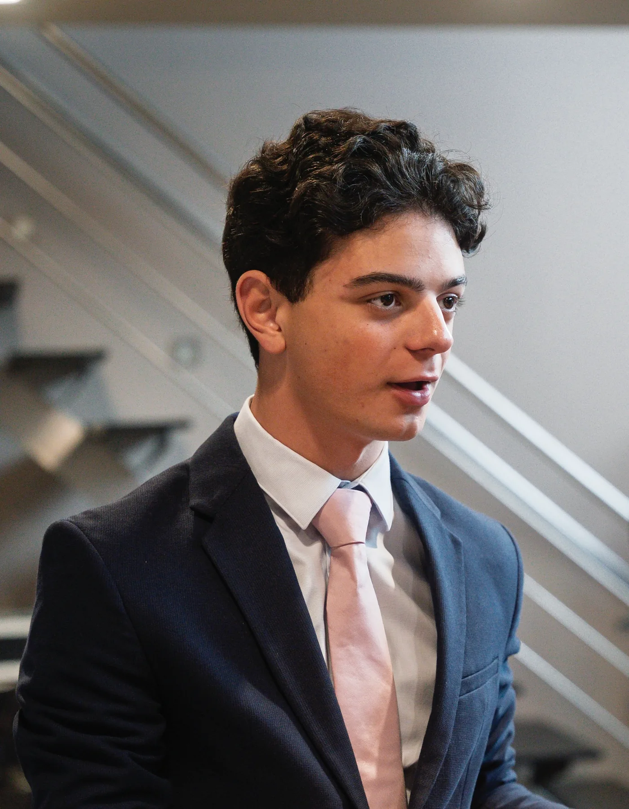

Étudiant en Bachelier Informatique, orientation Réseaux et Télécommunications à la Haute École en Hainaut. Je développe mes compétences en systèmes, réseaux et programmation à travers mes études et des projets personnels. Vous trouverez ici mon parcours, mes réalisations et mes projets.
À la recherche d’un stage de septembre à novembre 2027

Objectif : héberger mes propres services à la maison en limitant l’exposition de ma connexion. Sur un serveur Ubuntu, j’ai déployé des services conteneurisés avec Docker, dont un cloud personnel et un serveur multimédia, publiés sur Internet via Cloudflare Tunnel sans ouvrir de ports web, avec un VPN WireGuard pour y accéder à distance. Ce projet me fait pratiquer l’administration Linux, la conteneurisation et la sécurisation des accès.
Objectif : remplir automatiquement un roadbook de conduite. J’ai développé une application Python qui récupère les trajets depuis l’API Google Maps, ajoute les conditions météo de chaque trajet via une API météo, laisse choisir les trajets à ajouter et les exporte dans le fichier Excel au format demandé. D’abord en ligne de commande, elle est devenue une application web Flask déployée sur mon serveur derrière Gunicorn et Cloudflare Tunnel : un projet mené du script jusqu’à la mise en ligne.
Objectif : payer en stablecoin sans compte ni backend. En équipe avec Noah et Francisco Homero, nous avons réalisé une solution de paiement en USDT0 sur la blockchain Plasma, par QR code ou lien de facture. Un prototype réalisé dans le temps limité d’un hackathon.
Objectif : effectuer des transactions en stablecoin depuis un téléphone, par simple scan de QR code. En équipe avec Noah, nous avons réalisé une interface web mobile de transactions en RLUSD sur XRPL. Une deuxième approche du paiement mobile, cette fois sur le réseau XRPL.
Compétences en Python, technologies web et administration de systèmes (Windows Server) et de réseaux (Cisco). Je développe mes connaissances à travers mes études et des projets pratiques.
CCNA: Introduction to Networks
Cisco · septembre 2025
Introduction to IoT
Cisco · janvier 2025
Français
Langue maternelle
Anglais
Bon niveau
Italien
B1
Mon CV retrace mes expériences étudiantes et mon chemin académique.
2024–2027, en cours
Bachelier en Informatique – Réseaux et Télécommunications
Haute École en Hainaut
2018–2024
CESS Sciences Math Fortes
Athénée Provincial de La Louvière
2024–en cours
Commis de salle & Barman
La Brasserie des Ruines, Morlanwelz
2024–2025
Commis traiteur
Cora La Louvière
2023–2024
Magasinier
Mercatino La Louvière
2022
Préparateur de commandes
Soditra Logistics Nivelles
La photographie me permet de développer mon sens du détail et de l’observation. Capturer un moment, un lieu ou une ambiance m’aide à affiner ma précision et ma créativité.
Je pratique le théâtre et la danse, et j’ai obtenu en 2021 un certificat de diction avec distinction au Conservatoire de La Louvière. La scène m’a appris à m’exprimer avec aisance et à présenter devant un public.
J’adore voyager et découvrir d’autres cultures. C’est aussi l’occasion de pratiquer mes langues et de ramener quelques photos.
Le sport me permet de maintenir discipline, régularité et équilibre. Il contribue à ma persévérance et à ma gestion du stress.